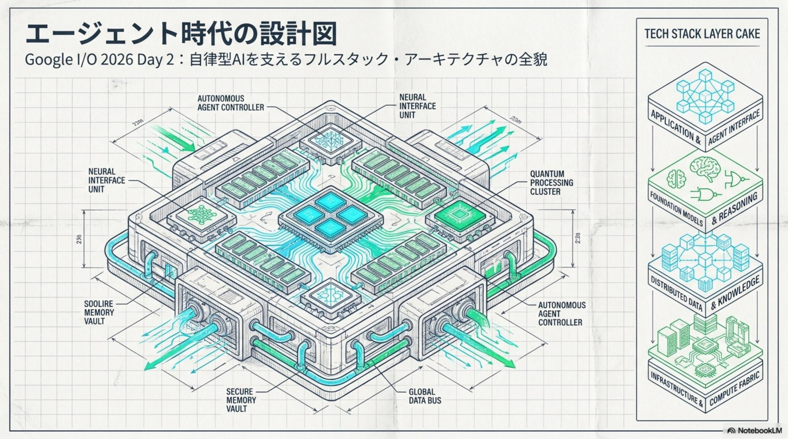
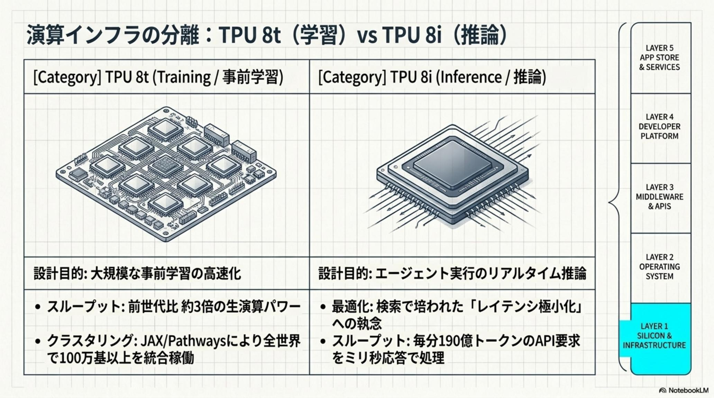
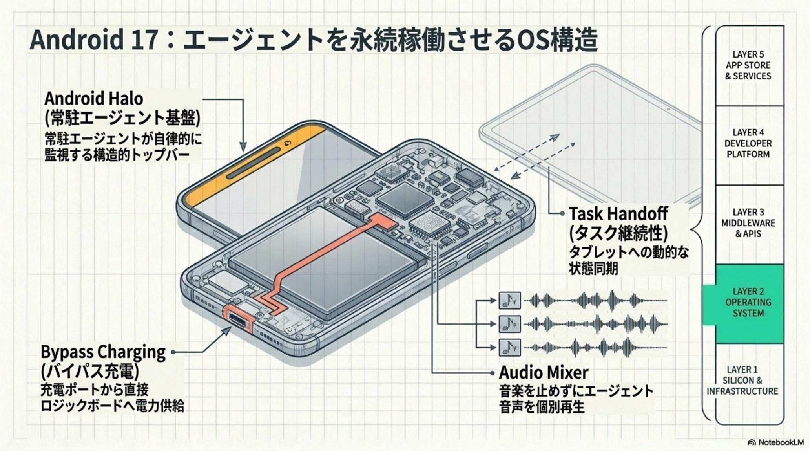
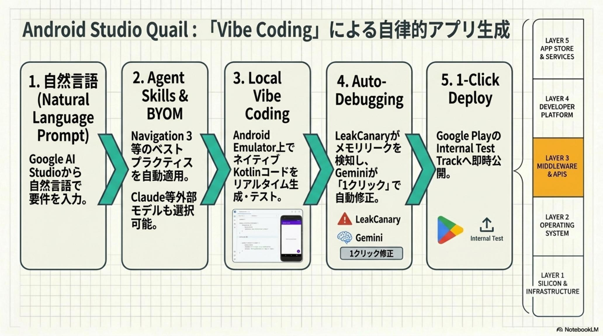
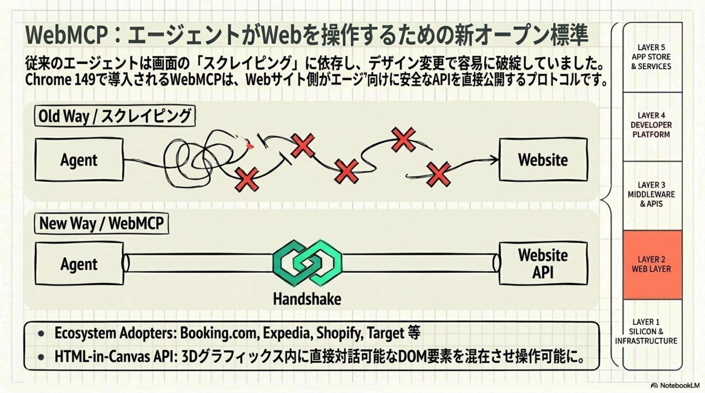
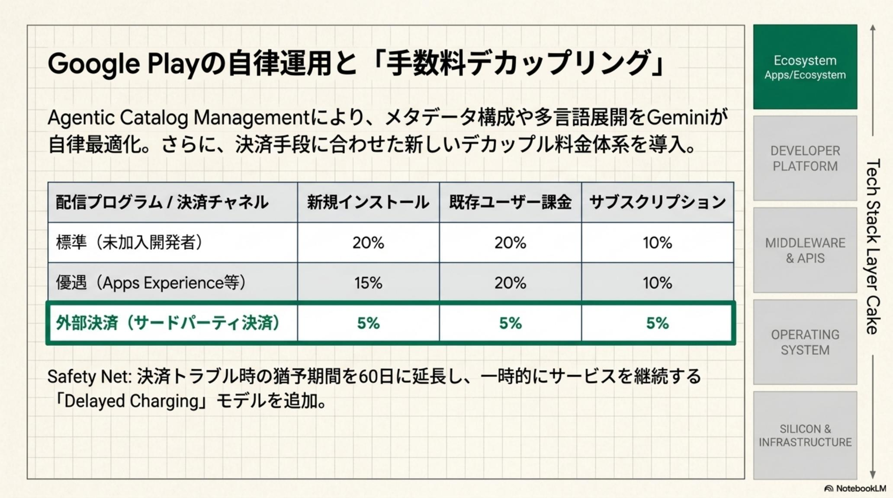
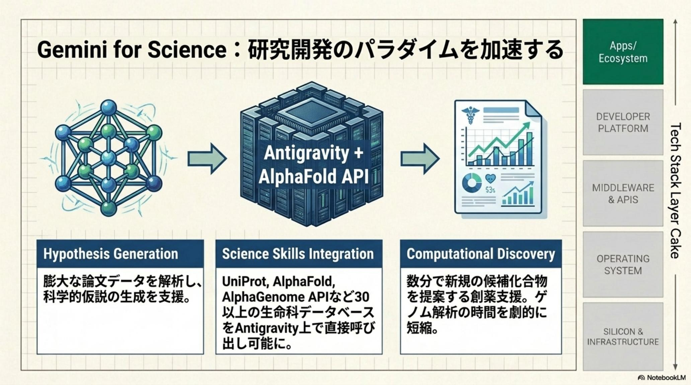
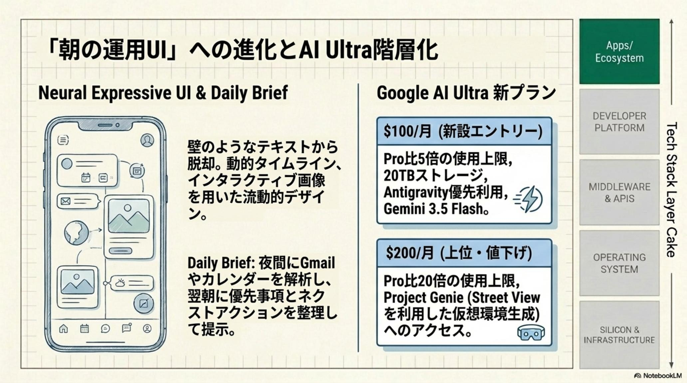
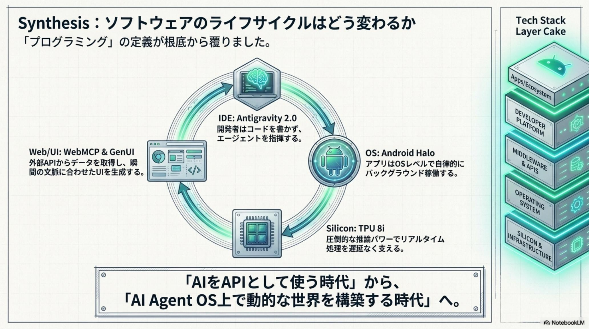
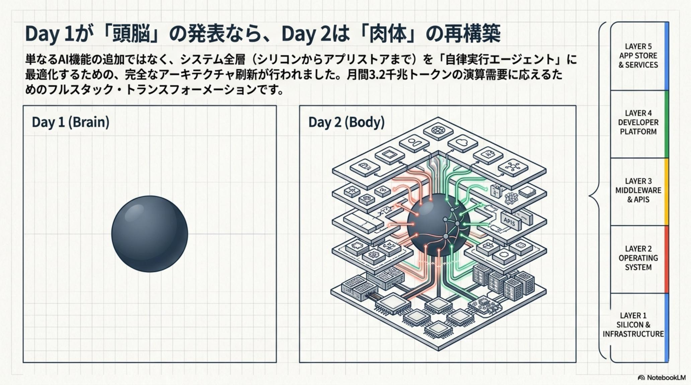

マルチエージェントのオーケストレーション地獄
1 個のエージェントは動かせても、複数の専門子エージェントを協調させて長時間タスクを完遂させるのは至難。サンドボックス・認証・Git ポリシーをゼロから組むコストが本質作業を圧迫してきた。
Google I/O 2026 Day 2 · Agentic Era Blueprint · Issue № 05/21
Day 1 が Gemini 3.5 と Omni という「知能」の極致を示したのに対し、Day 2 はその知能を社会に実装する「エージェント実行環境」 の全貌を提示した。月間3.2 千兆トークン・毎分190 億トークンの演算需要を受け止めるため、Google は TPU から OS、IDE、エコシステム手数料まで全スタックをエージェント実行に最適化する垂直統合を完了させた。
Antigravity 2.0 × Android 17 × TPU 8t/8i × Chrome 149 の WebMCP × Flutter GenUI × Firebase AI Logic 3 層防御 × Google Play 手数料デカップリング（20% / 15% / 5%）。

AI を単なる「API として呼び出す道具」として使う時代は終わった。エージェント指向アーキテクチャ（Agentic Architecture）が OS や Web、インフラそのものとなる時代の幕開けだ。開発者の役割は「コードの記述」から「エージェントのオーケストレーション」へ移行する。

Gemini 3.5 Flash や Omni の「知能」だけでは、エージェントは社会に根付かない。常駐稼働を支える OS / 安全な実行サンドボックス / Web からの操作可能性 / ビジネスモデル——4 つのレイヤーすべてに分断が残っていた。Day 2 はその全てに楔を打ち込む。
1 個のエージェントは動かせても、複数の専門子エージェントを協調させて長時間タスクを完遂させるのは至難。サンドボックス・認証・Git ポリシーをゼロから組むコストが本質作業を圧迫してきた。
バックグラウンドの永続実行はバッテリー熱と OS の制約でほぼ不可能。マルチデバイスでの状態同期や耐量子暗号も、アプリ側の自力対応に押し付けられていた。
エージェントは画面描画を待ち、DOM をスクレイピングし、決済フォームで詰まる。サイト側が API を構造化していないため、トランザクション完了までの摩擦が消えない。
創薬の仮説生成・ゲノム解析・動画リミックスは数ヶ月単位の人力作業。生命科学 DB や Omni の能力にアクセスする「実行レール」が欠けていた。

エージェントが 24 時間バックグラウンドで稼働するには、シリコンレベルから OS カーネル、Web プロトコル、エコシステム手数料までを一貫して再設計する必要があった。Google はその垂直統合をワンショットで完了させた。
特筆すべきは BYOM（Bring Your Own Model） アーキテクチャだ。Antigravity 2.0 は Gemini 3.5 Flash をデフォルトとしつつ、Claude や GPT などの外部モデルを IDE のバックエンドに指定可能。ベンダーロックインを避けつつ、Managed Agents API で隔離サンドボックス付き環境を 1 コールで生成できる。
Day 2 が提示したのは、エージェントを「ユーザーの代わりに 24 時間動かす」ためのフルスタック垂直統合。シリコン → OS → 開発環境 → Web プロトコル → 防御の 5 レイヤーが、ようやく揃った。
シリコン層では TPU 8t（学習・前世代比 3 倍）/ TPU 8i（推論特化・ミリ秒応答）のデュアル戦略。OS 層では Android 17 が常駐エージェント実行基盤へ進化。開発環境は Antigravity 2.0 + Android Studio Quail（Vibe Coding）。Web 層では Chrome 149 の WebMCP。防御層では Firebase AI Logic の 3 層構造。これらが組み合わさり、月間 3.2 千兆トークンを安全に稼働させる。




エージェント経済圏の拡大に合わせ、Google Play は配信と決済を切り離した新体系を導入した。標準 20% / Experience・Level Up 15% / サードパーティ決済利用時のデカップリング枠 5%。エージェントが自律的にトランザクションを行う時代に、開発者の収益構造そのものが再装填される。
手数料を 20% / 15% / 5% の 3 段階に分け、高品質マルチデバイス展開（Experience / Level Up）とサードパーティ決済利用（デカップリング枠）を優遇。同時に Universal Commerce Protocol で複数 EC を横断する「エージェント決済」を制度化し、Firebase AI Logic でクライアントからの動的プロンプト遮断・Auth トークン必須化・App Check リプレイ防止の 3 層防御を Backend に標準装備する。

アーキテクトのセキュリティノート：自律エージェントのバックエンドは Firebase AI Logic の 3 層防御を必須に。①Template-Only Modeでクライアントからの動的プロンプトを遮断し検証済みテンプレートのみを実行、②Authentication-Modeで有効な Auth トークンがない推論要求を拒否、③App Check リプレイ攻撃保護で使い捨てトークンによりセッション盗用を防止。これがエージェント時代のミニマム・セキュリティだ。
2026 年秋に訪れる「エージェント・ネイティブな日常」に向け、今すぐプラットフォームの再定義を開始する必要がある。立場ごとに最初の一歩は変わる。
AI を「導入」する発想を捨て、エージェントが稼働する前提でアーキテクチャを再編。状態管理・サンドボックス・権限境界を最初から設計に組み込む。
Python（Apache 2.0）の Antigravity SDK で既存エンタープライズワークフローへ自律実行機能を組み込む。Managed Agents API で 1 コールにより隔離サンドボックス環境を生成する。
Chrome 149 の WebMCP 対応で、エージェントが画面描画を待たず数秒でトランザクション完了できる構造に。JS 関数・フォームを API として公開する。
Backend は Firebase AI Logic の Template-Only / Authentication / App Check で 3 層防御。エージェント時代の最低限のセキュリティポリシーとして全社展開する。

最大のサプライズは Project Genie の Street View 統合だ。現実世界の空間情報を利用し、エージェントが活動するためのシミュレーション環境をオンデマンドで生成可能になった。AI がデジタル空間を超えて現実世界を理解し、操作し始める兆しである。
Android 17 安定版（6 月）→ Search Agents 米国展開（夏）→ Googlebook 発売（9 月）→ Project Aura スマートグラス発売（秋）。Google AI Ultra $100/月で Pro 比 5 倍 + Antigravity 優先アクセス + 20TB ストレージ、$200/月で Pro 比 20 倍 + Project Genie 早期アクセス。


Day 2 が告げるのは、Day 1 の「知能」を社会に実装するための具体的な作業マップだ。立場ごとに最初の一歩は変わる。
Antigravity SDK（Python / Apache 2.0）を既存ワークフローへ組み込み、Managed Agents API で隔離サンドボックスを 1 コール生成。BYOM で Claude / GPT を併用しベンダーロックインを回避する。
Android Studio Quail の Vibe Coding と Agent Skills（XML → Jetpack Compose 移行、Navigation 3 準拠）で実装の詳細をエージェントへ。Android Halo / Handoff / PQC / Bypass Charging で常駐稼働を前提に設計する。
Chrome 149 の WebMCP に対応し、JS 関数とフォームを API として構造化。Universal Commerce Protocol（UCP）参画で Universal Cart 経由のエージェント決済に対応する。
Gemini for Science で AlphaFold Database / AlphaGenome API 等 30+ DB を Antigravity 上で自動化、創薬を数ヶ月から数日へ短縮。YouTube Shorts Remix で Omni 統合の動画リミックスを SynthID 付きで自動生成し制作時間 90% 削減。
AI はもはや「導入」するものではない——エージェントが稼働する前提で アーキテクチャを再編 する対象だ。— Google I/O 2026 Day 2 / Agentic Era Blueprint · 2026-05-21